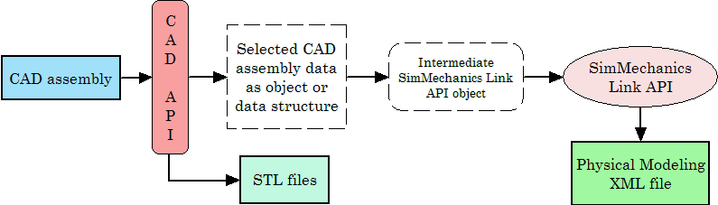
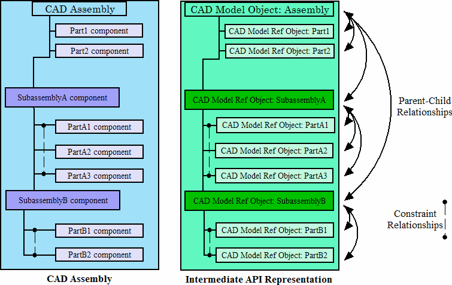

Warning
This content is specific to Simscape™ Multibody™ First Generation software. First-generation features are slated to be deprecated and should be avoided.
A complete CAD assembly contains information both relevant and not relevant for exporting an XML multibody description file to represent your assembly.

For detailed information on the design of a custom export module, see section Design Custom Exporter Module.
You obtain the selected assembly data through the CAD platform application programming interface (API) in the form of an object or a data structure. The data required from an assembly to construct a Simscape Multibody model include:
Mapping of Selected Mechanical Data to Simscape Multibody Model Components
| Data Selected from CAD Assembly or Other External Machine Definition Mapped to... | ...Required Simscape Multibody Model Component |
|---|---|
| Assembly and parts origin | Ground and World coordinate system |
| Assembly and subassembly hierarchy | Model and subsystem hierarchy |
| Part masses and inertia tensors, colors, and body geometry file names | Bodies, including their mass properties, geometries, and colors |
| Constraint restrictions on relative positions and motions of parts | Joints between pairs of Bodies Body coordinate systems connected to Joints |
Refer to the table Mapping of Selected Mechanical Data to Simscape Multibody Model Components. Using your CAD exporter module, you transform the selected data listed in the first column of the table into the form required in the second column with the Simscape Multibody Link API functions and data types. You collect the selected data into an intermediate Simscape Multibody Link API object. With the Simscape Multibody Link API, you then write the intermediate API representation to an XML multibody description file.
See Design Custom Exporter Module for information on these API functions and data types.
For each moving Body in the model, the final Simscape Multibody model requires a separate body geometry file in STEP or STL format. You export these body geometry files directly from the CAD API, with file names matching the body geometry file names specified in the exported XML file. You specify these file names in the Simscape Multibody Link API object.
Tip
You need body geometry files only for individual moving CAD parts or rigid subassemblies, not for flexible subassemblies.
The assembly data that you need to retrieve through the CAD API starts with the assembly-subassembly hierarchy, with nodes. Each node in the hierarchical tree is an assembly component (a part or a subassembly).
For an individual component, the next component immediately up in the hierarchy is its parent. All dependent components connected below in the hierarchy are its children. The top parent in the assembly hierarchy is the whole assembly itself.
For each component, determine:
Its geometric transformation with respect to its parent, its mass, its inertia tensor, its body geometry and color (for a part, or for a rigid subassembly exported as a single rigid body)
The constraints that restrict how its children can move with respect to each other
Whether or not the component is rigid or flexible; that is, whether all its children are to be treated as a single rigid body or as individual moving bodies
Whether or not the component is fixed; that is, whether it is rigid or moving with respect to its parent
Before you can export the CAD assembly, you must construct a selective intermediate CAD representation, a collection of objects that capture the required CAD data.
CAD models (not to be confused with CAD assemblies or Simscape Multibody models). These represent assemblies, subassemblies, and parts.
CAD model references
Components (parts or subassemblies)
Constraints
A translator object constructed from all the other objects
To construct a full CAD representation:
Represent the entire assembly with a CAD model object.
Represent child parts and subassemblies with additional CAD model objects.
If a subassembly is flexible (its parts can move with respect to each other), the subassembly is a parent to child parts, represented by their own CAD model objects.
Add child CAD model reference objects to their parent CAD model objects, including parent-to-child transforms.
You might need to repeat steps 1 through 3 recursively until you have mapped the entire CAD assembly hierarchy.
Represent constraints between components with constraint objects. These are also children to parent assembly and subassembly objects.
Form a single translator object from all these objects, referenced by one another in a hierarchy that parallels the original assembly hierarchy.
CAD Assembly and Intermediate API Representation: Parallel Hierarchies

The final translator object is the last intermediate form of the CAD assembly translation. From this translator object, you create the XML multibody description file representing the assembly.